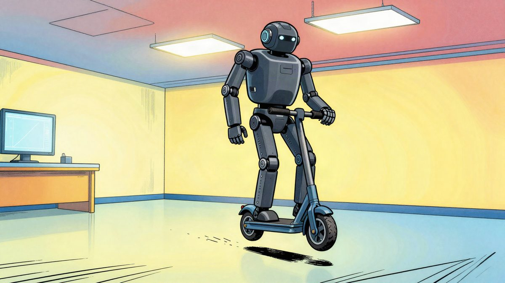
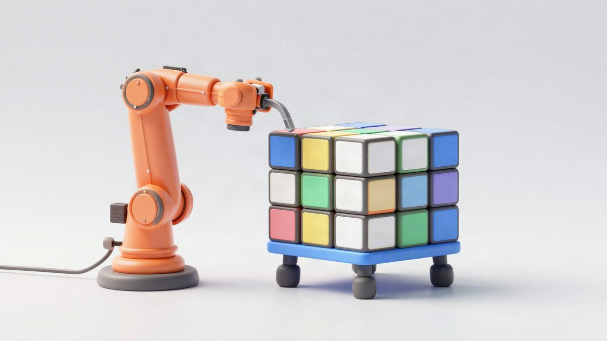
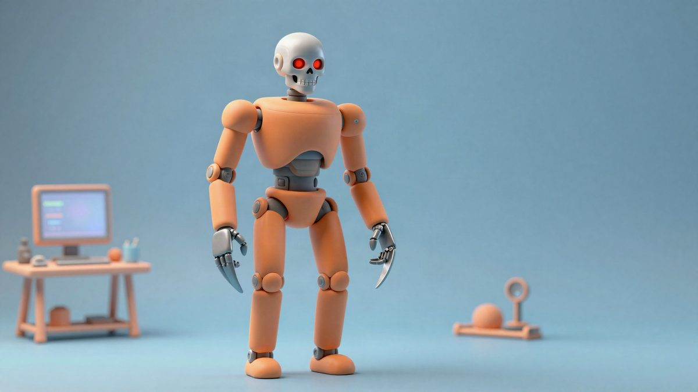

Boston Dynamics je stavio kotače na Atlas: humanoid izvodi skok od 360 stupnjeva

Boston Dynamics je Atlasu umjesto stopala ugradio kotače s električnih romobila kako bi testirao motore i kontrolere naučene u simulaciji. Robot je skok od 360 stupnjeva izveo iz prvog pokušaja, a rezultati bi trebali utjecati na standardnu konfiguraciju Atlasa.
Boston Dynamics je humanoidnom robotu Atlas umjesto stopala ugradio par kotača. Riječ je o eksperimentalnoj konfiguraciji kojom inženjeri provjeravaju kako humanoid podnosi dugotrajno kretanje velikim brzinama i velika opterećenja. Atlas na kotačima, među ostalim, izvodi skok od 360 stupnjeva.
Kotačasti Atlas nije planiran kao komercijalni proizvod. Boston Dynamics ga je razvio kao istraživačku platformu, da ispita koliko točno kontroleri istrenirani u simulaciji mogu upravljati stvarnim hardwareom. Projekt pokazuje i što se događa kad se aktuatori potjeraju blizu fizičkih granica.
Jednostavna preinaka
Preinaka je bila prilično jednostavna. Boston Dynamics je na Atlas pričvrstio standardne kotače s električnih romobila pomoću prilagođenog adaptera, koji se spaja izravno na postojeće aktuatore u gležnjevima. Druge veće preinake hardwarea nisu bile potrebne. Inženjeri nisu morali iznova graditi ni softverski model robota, nego su simulirana stopala zamijenili kotačima koji se mogu neprekidno okretati.
To odražava modularan dizajn Atlasa, razvijen s mišlju na skalabilnu proizvodnju i lakše održavanje. Kotači su bili koristan test jer tjeraju motore da daju velik okretni moment uz visoke brzine vrtnje. Svako ubrzavanje, skretanje i kočenje trajno opterećuje aktuatore.
Učenje vožnje
Eksperiment je poslužio i za istraživanje reinforcement learninga (RL). Ta tehnika trenira robota kroz ponovljene simulacije, a kontrolni sustav sam otkriva učinkovite pokrete. Najveći je problem prenijeti naučeno ponašanje na stvarni hardware, jer se simulirani motor može ponašati drukčije od stvarnog, pa pokreti koji rade u virtualnom svijetu na robotu zakažu.
Boston Dynamics je to riješio doradom simuliranih modela motora. Inženjeri su fizičkim pokusima izmjerili ponašanje aktuatora, a zatim prilagodili parametre simulacije stvarnim performansama hardwarea. Tim je izmijenio i postojeće RL frameworke, a promjene u naredbama za trening, funkcijama nagrade i kontroli držanja tijela pomogle su da Atlas razvije glatko kotrljanje.
Novi pokreti
Dio pokreta inspiriran je snimkama ljudskog kretanja (motion capture). Inženjeri su birali primjere s mnogo klizanja stopala da vide mogu li kotači reproducirati slične pokrete. Kod bočnih iskoraka Atlas više ne vuče stopala po podlozi, nego okreće kotače i kotrlja se u stranu.
Robot je izveo i skok od 360 stupnjeva pomoću kontrolera koji prati putanju. Sustav je slijedio snimljene podatke o ljudskom pokretu i manevar izveo iz prvog pokušaja. Za razliku od konfiguracije sa stopalima, Atlas se prije skoka kotrljanjem donjeg dijela tijela namjestio u položaj za odraz. Tako je reinforcement learning pronašao novi način iskorištavanja prianjanja.
Boston Dynamics navodi da će rezultati utjecati na razvoj standardne konfiguracije Atlasa. Inženjeri žele kombinirati točne modele aktuatora s učenjem cijelog tijela da poboljšaju pouzdanost i prošire mogućnosti humanoida.
Izvor: Interesting Engineering
Povezani članci

ETH Zürich pokazao robota ANYmal-D koji nogama rješava veliki Rubikov kocku25. listopada 2026. Unitree H2-X: humanoidni robot koji tvrdi da može podići auto i izvoditi borilačke vještine22. listopada 2026.
Unitree H2-X: humanoidni robot koji tvrdi da može podići auto i izvoditi borilačke vještine22. listopada 2026.
Humanoidni robot Zhongqing T800 je dobio Terminatorovu lubanju i Wolverineove oštrice11. studenoga 2026.